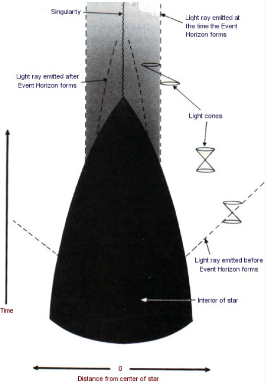
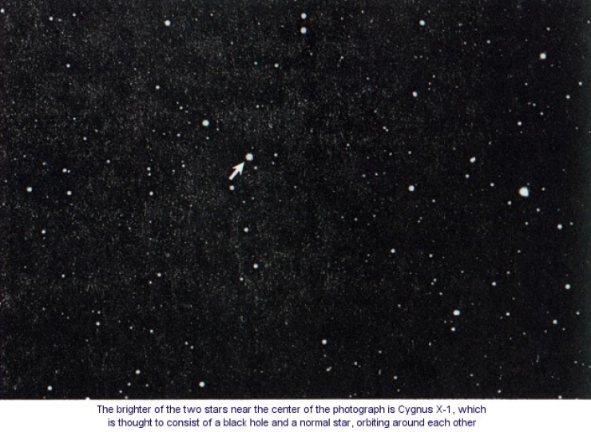
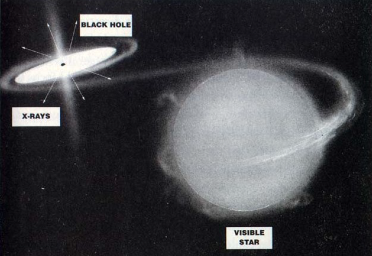

CHAPTER 6 BLACK HOLES
第六章 黑洞
The term black hole is of very recent origin. It was coined in 1969 by the American scientist John Wheeler as a graphic description of an idea that goes back at least two hundred years, to a time when there were two theories about light: one, which Newton favored, was that it was composed of particles; the other was that it was made of waves. We now know that really both theories are correct. By the wave/particle duality of quantum mechanics, light can be regarded as both a wave and a particle. Under the theory that light is made up of waves, it was not clear how it would respond to gravity. But if light is composed of particles, one might expect them to be affected by gravity in the same way that cannonballs, rockets, and planets are. At first people thought that particles of light traveled infinitely fast, so gravity would not have been able to slow them down, but the discovery by Roemer that light travels at a finite speed meant that gravity might have an important effect.
黑洞这一术语是不久以前才出现的。它是1969年美国科学家约翰·惠勒为形象描述至少可回溯到200年前的这个思想时所杜撰的名字。那时候，共有两种光理论：一种是牛顿赞成的光的微粒说；另一种是光的波动说。我们现在知道，实际上这两者都是正确的。由于量子力学的波粒二象性，光既可认为是波，也可认为是粒子。在光的波动说中，不清楚光对引力如何响应。但是如果光是由粒子组成的，人们可以预料，它们正如同炮弹、火箭和行星那样受引力的影响。起先人们以为，光粒子无限快地运动，所以引力不可能使之慢下来，但是罗麦关于光速度有限的发现表明引力对之可有重要效应。
On this assumption, a Cambridge don, John Michell, wrote a paper in 1783 in the Philosophical Transactions of the Royal Society of London in which he pointed out that a star that was sufficiently massive and compact would have such a strong gravitational field that light could not escape: any light emitted from the surface of the star would be dragged back by the star’s gravitational attraction before it could get very far. Michell suggested that there might be a large number of stars like this. Although we would not be able to see them because the light from them would not reach us, we would still feel their gravitational attraction. Such objects are what we now call black holes, because that is what they are: black voids in space. A similar suggestion was made a few years later by the French scientist the Marquis de Laplace, apparently independently of Michell. Interestingly enough, Laplace included it in only the first and second editions of his book The System of the World, and left it out of later editions; perhaps he decided that it was a crazy idea. (Also, the particle theory of light went out of favor during the nineteenth century; it seemed that everything could be explained by the wave theory, and according to the wave theory, it was not clear that light would be affected by gravity at all.)
1783年，剑桥的学监约翰·米歇尔在这个假定的基础上，在《伦敦皇家学会哲学学报》上发表了一篇文章。他指出，一个质量足够大并足够紧致的恒星会有如此强大的引力场，以致于连光线都不能逃逸——任何从恒星表面发出的光，还没到达远处即会被恒星的引力吸引回来。米歇尔暗示，可能存在大量这样的恒星，虽然会由于从它们那里发出的光不会到达我们这儿而使我们不能看到它们，但我们仍然可以感到它们的引力的吸引作用。这正是我们现在称为黑洞的物体。它是名符其实的——在空间中的黑的空洞。几年之后，法国科学家拉普拉斯侯爵显然独自提出和米歇尔类似的观念。非常有趣的是，拉普拉斯只将此观点纳入他的《世界系统》一书的第一版和第二版中，而在以后的版本中将其删去，可能他认为这是一个愚蠢的观念。（此外，光的微粒说在19世纪变得不时髦了；似乎一切都可以以波动理论来解释，而按照波动理论，不清楚光究竟是否受到引力的影响。）
In fact, it is not really consistent to treat light like cannonballs in Newton’s theory of gravity because the speed of light is fixed. (A cannonball fired upward from the earth will be slowed down by gravity and will eventually stop and fall back; a photon, however, must continue upward at a constant speed. How then can Newtonian grav-ity affect light?) A consistent theory of how gravity affects light did not come along until Einstein proposed general relativity in 1915. And even then it was a long time before the implications of the theory for massive stars were understood.
事实上，因为光速是固定的，所以，在牛顿引力论中将光类似炮弹那样处理实在很不协调。（从地面发射上天的炮弹由于引力而减速，最后停止上升并折回地面；然而，一个光子必须以不变的速度继续向上，那么牛顿引力对于光如何发生影响呢？）直到1915年爱因斯坦提出广义相对论之前，一直没有关于引力如何影响光的协调的理论。甚至又过了很长时间，这个理论对大质量恒星的含意才被理解。
To understand how a black hole might be formed, we first need an understanding of the life cycle of a star. A star is formed when a large amount of gas (mostly hydrogen) starts to collapse in on itself due to its gravitational attraction. As it contracts, the atoms of the gas collide with each other more and more frequently and at greater and greater speeds – the gas heats up. Eventually, the gas will be so hot that when the hydrogen atoms collide they no longer bounce off each other, but instead coalesce to form helium. The heat released in this reaction, which is like a controlled hydrogen bomb explosion, is what makes the star shine. This additional heat also increases the pressure of the gas until it is sufficient to balance the gravitational attraction, and the gas stops contracting. It is a bit like a balloon – there is a balance between the pressure of the air inside, which is trying to make the balloon expand, and the tension in the rubber, which is trying to make the balloon smaller. Stars will remain stable like this for a long time, with heat from the nuclear reactions balancing the gravitational attraction. Eventually, however, the star will run out of its hydrogen and other nuclear fuels. Paradoxically, the more fuel a star starts off with, the sooner it runs out. This is because the more massive the star is, the hotter it needs to be to balance its gravitational attraction. And the hotter it is, the faster it will use up its fuel. Our sun has probably got enough fuel for another five thousand million years or so, but more massive stars can use up their fuel in as little as one hundred million years, much less than the age of the universe. When a star runs out of fuel, it starts to cool off and so to contract. What might happen to it then was first understood only at the end of the 1920s.
为了理解黑洞是如何形成的，我们首先需要理解一个恒星的生命周期。起初，大量的气体（大部分为氢）受自身的引力吸引，而开始向自身坍缩而形成恒星。当它收缩时，气体原子相互越来越频繁地以越来越大的速度碰撞——气体的温度上升。最后，气体变得如此之热，以至于当氢原子碰撞时，它们不再弹开而是聚合形成氦。如同一个受控氢弹爆炸，反应中释放出来的热使得恒星发光。这增添的热又使气体的压力升高，直到它足以平衡引力的吸引，这时气体停止收缩。这有一点像气球——内部气压试图使气球膨胀，橡皮的张力试图使气球缩小，它们之间存在一个平衡。从核反应发出的热和引力吸引的平衡，使恒星在很长时间内维持这种平衡。然而，最终恒星会耗尽了它的氢和其他核燃料。貌似大谬，其实不然的是，恒星初始的燃料越多，它则燃尽得越快。这是因为恒星的质量越大，它就必须越热才足以抵抗引力。而它越热，它的燃料就被用得越快。我们的太阳大概足够再燃烧50多亿年，但是质量更大的恒星可以在1亿年这么短的时间内用尽其燃料，这个时间尺度比宇宙的年龄短得多了。当恒星耗尽了燃料，它开始变冷并开始收缩。随后发生的情况只有等到本世纪20年代末才初次被人们理解。
In 1928 an Indian graduate student, Subrahmanyan Chandrasekhar, set sail for England to study at Cambridge with the British astronomer Sir Arthur Eddington, an expert on general relativity. (According to some accounts, a journalist told Eddington in the early 1920s that he had heard there were only three people in the world who understood general relativity. Eddington paused, then replied, “I am trying to think who the third person is.”) During his voyage from India, Chandrasekhar worked out how big a star could be and still support itself against its own gravity after it had used up all its fuel. The idea was this: when the star becomes small, the matter particles get very near each other, and so according to the Pauli exclusion principle, they must have very different velocities. This makes them move away from each other and so tends to make the star expand. A star can therefore maintain itself at a constant radius by a balance between the attraction of gravity and the repulsion that arises from the exclusion principle, just as earlier in its life gravity was balanced by the heat. .
1928年，一位印度研究生——萨拉玛尼安·强德拉塞卡——乘船来英国剑桥跟英国天文学家阿瑟·爱丁顿爵士（一位广义相对论家）学习。（据记载，在本世纪20年代初有一位记者告诉爱丁顿，说他听说世界上只有三个人能理解广义相对论，爱丁顿停了一下，然后回答：“我正在想这第三个人是谁？”。）在他从印度来英的旅途中，强德拉塞卡算出在耗尽所有燃料之后，多大的恒星可以继续对抗自己的引力而维持自己。这个思想是说：当恒星变小时，物质粒子靠得非常近，而按照泡利不相容原理，它们必须有非常不同的速度。这使得它们互相散开并企图使恒星膨胀。一颗恒星可因引力作用和不相容原理引起的排斥力达到平衡而保持其半径不变，正如在它的生命的早期引力被热所平衡一样。
Chandrasekhar realized, however, that there is a limit to the repulsion that the exclusion principle can provide. The theory of relativity limits the maximum difference in the velocities of the matter particles in the star to the speed of light. This means that when the star got sufficiently dense, the repulsion caused by the exclusion principle would be less than the attraction of gravity. Chandrasekhar calculated that a cold star of more than about one and a half times the mass of the sun would not be able to support itself against its own gravity. (This mass is now known as the Chandrasekhar limit.) A similar discovery was made about the same time by the Russian scientist Lev Davidovich Landau
然而，强德拉塞卡意识到，不相容原理所能提供的排斥力有一个极限。恒星中的粒子的最大速度差被相对论限制为光速。这意味着，恒星变得足够紧致之时，由不相容原理引起的排斥力就会比引力的作用小。强德拉塞卡计算出；一个大约为太阳质量一倍半的冷的恒星不能支持自身以抵抗自己的引力。（这质量现在称为强德拉塞卡极限。）苏联科学家列夫·达维多维奇·兰道几乎在同时也得到了类似的发现。
This had serious implications for the ultimate fate of massive stars. If a star’s mass is less than the Chandrasekhar limit, it can eventually stop contracting and settle down to a possible final state as a “white dwarf” with a radius of a few thousand miles and a density of hundreds of tons per cubic inch. A white dwarf is supported by the exclusion principle repulsion between the electrons in its matter. We observe a large number of these white dwarf stars. One of the first to be discovered is a star that is orbiting around Sirius, the brightest star in the night sky.
这对大质量恒星的最终归宿具有重大的意义。如果一颗恒星的质量比强德拉塞卡极限小，它最后会停止收缩并终于变成一颗半径为几千英里和密度为每立方英寸几百吨的“白矮星”。白矮星是它物质中电子之间的不相容原理排斥力所支持的。我们观察到大量这样的白矮星。第一颗被观察到的是绕着夜空中最亮的恒星——天狼星转动的那一颗。
Landau pointed out that there was another possible final state for a star, also with a limiting mass of about one or two times the mass of the sun but much smaller even than a white dwarf. These stars would be supported by the exclusion principle repulsion between neutrons and protons, rather than between electrons. They were therefore called neutron stars. They would have a radius of only ten miles or so and a density of hundreds of millions of tons per cubic inch. At the time they were first predicted, there was no way that neutron stars could be observed. They were not actually detected until much later.
兰道指出，对于恒星还存在另一可能的终态。其极限质量大约也为太阳质量的一倍或二倍，但是其体积甚至比白矮星还小得多。这些恒星是由中子和质子之间，而不是电子之间的不相容原理排斥力所支持。所以它们被叫做中子星。它们的半径只有10英里左右，密度为每立方英寸几亿吨。在中子星被第一次预言时，并没有任何方法去观察它。实际上，很久以后它们才被观察到。
Stars with masses above the Chandrasekhar limit, on the other hand, have a big problem when they come to the end of their fuel. In some cases they may explode or manage to throw off enough matter to reduce their mass below the limit and so avoid catastrophic gravitational collapse, but it was difficult to believe that this always happened, no matter how big the star. How would it know that it had to lose weight? And even if every star managed to lose enough mass to avoid collapse, what would happen if you added more mass to a white dwarf 'or neutron star to take it over the limit? Would it collapse to infinite density? Eddington was shocked by that implication, and he refused to believe Chandrasekhar’s result. Eddington thought it was simply not possible that a star could collapse to a point. This was the view of most scientists: Einstein himself wrote a paper in which he claimed that stars would not shrink to zero size. The hostility of other scientists, particularly Eddington, his former teacher and the leading authority on the structure of stars, persuaded Chandrasekhar to abandon this line of work and turn instead to other problems in astronomy, such as the motion of star clusters. However, when he was awarded the Nobel Prize in 1983, it was, at least in part, for his early work on the limiting mass of cold stars.
另一方面，质量比强德拉塞卡极限还大的恒星在耗尽其燃料时，会出现一个很大的问题：在某种情形下，它们会爆炸或抛出足够的物质，使自己的质量减少到极限之下，以避免灾难性的引力坍缩。但是很难令人相信，不管恒星有多大，这总会发生。怎么知道它必须损失重量呢？即使每个恒星都设法失去足够多的重量以避免坍缩，如果你把更多的质量加在白矮星或中子星上，使之超过极限将会发生什么？它会坍缩到无限密度吗？爱丁顿为此感到震惊，他拒绝相信强德拉塞卡的结果。爱丁顿认为，一颗恒星不可能坍缩成一点。这是大多数科学家的观点：爱因斯坦自己写了一篇论文，宣布恒星的体积不会收缩为零。其他科学家，尤其是他以前的老师、恒星结构的主要权威——爱丁顿的敌意使强德拉塞卡抛弃了这方面的工作，转去研究诸如恒星团运动等其他天文学问题。然而，他获得1983年诺贝尔奖，至少部分原因在于他早年所做的关于冷恒星的质量极限的工作。
Chandrasekhar had shown that the exclusion principle could not halt the collapse of a star more massive than the Chandrasekhar limit, but the problem of understanding what would happen to such a star, according to general relativity, was first solved by a young American, Robert Oppenheimer, in 1939. His result, however, suggested that there would be no observational consequences that could be detected by the telescopes of the day. Then World War II intervened and Oppenheimer himself became closely involved in the atom bomb project. After the war the problem of gravitational collapse was largely forgotten as most scientists became caught up in what happens on the scale of the atom and its nucleus. In the 1960s, however, interest in the large-scale problems of astronomy and cosmology was revived by a great increase in the number and range of astronomical observations brought about by the application of modern technology. Oppenheimer’s work was then rediscovered and extended by a number of people.
强德拉塞卡指出，不相容原理不能够阻止质量大于强德拉塞卡极限的恒星发生坍缩。但是，根据广义相对论，这样的恒星会发生什么情况呢？这个问题被一位年轻的美国人罗伯特·奥本海默于1939年首次解决。然而，他所获得的结果表明，用当时的望远镜去观察不会再有任何结果。以后，因第二次世界大战的干扰，奥本海默本人非常密切地卷入到原子弹计划中去。战后，由于大部分科学家被吸引到原子和原子核尺度的物理中去，因而引力坍缩的问题被大部分人忘记了。但在本世纪60年代，现代技术的应用使得天文观测范围和数量大大增加，重新激起人们对天文学和宇宙学的大尺度问题的兴趣。奥本海默的工作被重新发现，并被一些人推广。
The picture that we now have from Oppenheimer’s work is as follows. The gravitational field of the star changes the paths of light rays in space-time from what they would have been had the star not been present. The light cones, which indicate the paths followed in space and time by flashes of light emitted from their tips, are bent slightly inward near the surface of the star. This can be seen in the bending of light from distant stars observed during an eclipse of the sun. As the star contracts, the gravitational field at its surface gets stronger and the light cones get bent inward more. This makes it more difficult for light from the star to escape, and the light appears dimmer and redder to an observer at a distance. Eventually, when the star has shrunk to a certain critical radius, the gravitational field at the surface becomes so strong that the light cones are bent inward so much that light can no longer escape Figure 6:1.
现在，我们从奥本海默的工作中得到一幅这样的图象：恒星的引力场改变了光线的路径，使之和原先没有恒星情况下的路径不一样。光锥是表示光线从其顶端发出后在空间——时间里传播的轨道。光锥在恒星表面附近稍微向内偏折，在日食时观察远处恒星发出的光线，可以看到这种偏折现象。当该恒星收缩时，其表面的引力场变得很强，光线向内偏折得更多，从而使得光线从恒星逃逸变得更为困难。对于在远处的观察者而言，光线变得更黯淡更红。最后，当这恒星收缩到某一临界半径时，表面的引力场变得如此之强，使得光锥向内偏折得这么多，以至于光线再也逃逸不出去（图6.1）。
According to the theory of relativity, nothing can travel faster than light. Thus if light cannot escape, neither can anything else; everything is dragged back by the gravitational field. So one has a set of events, a region of space-time, from which it is not possible to escape to reach a distant observer. This region is what we now call a black hole. Its boundary is called the event horizon and it coincides with the paths of light rays that just fail to escape from the black hole.
根据相对论，没有东西会走得比光还快。这样，如果光都逃逸不出来，其他东西更不可能逃逸，都会被引力拉回去。也就是说，存在一个事件的集合或空间——时间区域，光或任何东西都不可能从该区域逃逸而到达远处的观察者。现在我们将这区域称作黑洞，将其边界称作事件视界，它和刚好不能从黑洞逃逸的光线的轨迹相重合。
remember that in the theory of relativity there is no absolute time. Each observer has his own measure of time. The time for someone on a star will be different from that for someone at a distance, because of the gravitational field of the star. Suppose an intrepid astronaut on the surface of the collapsing star, collapsing inward with it, sent a signal every second, according to his watch, to his spaceship orbiting about the star. At some time on his watch, say 11:00, the star would shrink below the critical radius at which the gravitational field becomes so strong nothing can escape, and his signals would no longer reach the spaceship. As 11:00 approached his companions watching from the spaceship would find the intervals between successive signals from the astronaut getting longer and longer, but this effect would be very small before 10:59:59. They would have to wait only very slightly more than a second between the astronaut’s 10:59:58 signal and the one that he sent when his watch read 10:59:59, but they would have to wait forever for the 11:00 signal. The light waves emitted from the surface of the star between 10:59:59 and 11:00, by the astronaut’s watch, would be spread out over an infinite period of time, as seen from the spaceship. The time interval between the arrival of successive waves at the spaceship would get longer and longer, so the light from the star would appear redder and redder and fainter and fainter. Eventually, the star would be so dim that it could no longer be seen from the spaceship: all that would be left would be a black hole in space. The star would, however, continue to exert the same gravitational force on the spaceship, which would continue to orbit the black hole.
当你观察一个恒星坍缩并形成黑洞时，为了理解你所看到的情况，切记在相对论中没有绝对时间。每个观测者都有自己的时间测量。由于恒星的引力场，在恒星上某人的时间将和在远处某人的时间不同。假定在坍缩星表面有一无畏的航天员和恒星一起向内坍缩，按照他的表，每一秒钟发一信号到一个绕着该恒星转动的空间飞船上去。在他的表的某一时刻，譬如11点钟，恒星刚好收缩到它的临界半径，此时引力场强到没有任何东西可以逃逸出去，他的信号再也不能传到空间飞船了。当11点到达时，他在空间飞船中的伙伴发现，航天员发来的一串信号的时间间隔越变越长。但是这个效应在10点59分59秒之前是非常微小的。在收到10点59分58秒和10点59分59秒发出的两个信号之间，他们只需等待比一秒钟稍长一点的时间，然而他们必须为11点发出的信号等待无限长的时间。按照航天员的手表，光波是在10点59分59秒和11点之间由恒星表面发出；从空间飞船上看，那光波被散开到无限长的时间间隔里。在空间飞船上收到这一串光波的时间间隔变得越来越长，所以恒星来的光显得越来越红、越来越淡，最后，该恒星变得如此之朦胧，以至于从空间飞船上再也看不见它，所余下的只是空间中的一个黑洞。然而，此恒星继续以同样的引力作用到空间飞船上，使飞船继续绕着所形成的黑洞旋转。
This scenario is not entirely realistic, however, because of the following problem. Gravity gets weaker the farther you are from the star, so the gravitational force on our intrepid astronaut’s feet would always be greater than the force on his head. This difference in the forces would stretch our astronaut out like spaghetti or tear him apart before the star had contracted to the critical radius at which the event horizon formed! However, we believe that there are much larger objects in the universe, like the central regions of galaxies, that can also undergo gravitational collapse to produce black holes; an astronaut on one of these would not be torn apart before the black hole formed. He would not, in fact, feel anything special as he reached the critical radius, and could pass the point of no return without noticing it However, within just a few hours, as the region continued to collapse, the difference in the gravitational forces on his head and his feet would become so strong that again it would tear him apart.
但是由于以下的问题，使得上述情景不是完全现实的。你离开恒星越远则引力越弱，所以作用在这位无畏的航天员脚上的引力总比作用到他头上的大。在恒星还未收缩到临界半径而形成事件视界之前，这力的差就已经将我们的航天员拉成意大利面条那样，甚至将他撕裂！然而，我们相信，在宇宙中存在质量大得多的天体，譬如星系的中心区域，它们遭受到引力坍缩而产生黑洞；一位在这样的物体上面的航天员在黑洞形成之前不会被撕开。事实上，当他到达临界半径时，不会有任何异样的感觉，甚至在通过永不回返的那一点时，都没注意到。但是，随着这区域继续坍缩，只要在几个钟头之内，作用到他头上和脚上的引力之差会变得如此之大，以至于再将其撕裂。
The work that Roger Penrose and I did between 1965 and 1970 showed that, according to general relativity, there must be a singularity of infinite density and space-time curvature within a black hole. This is rather like the big bang at the beginning of time, only it would be an end of time for the collapsing body and the astronaut. At this singularity the laws of science and our ability to predict the future would break down. However, any observer who remained outside the black hole would not be affected by this failure of predictability, because neither light nor any other signal could reach him from the singularity. This remarkable fact led Roger Penrose to propose the cosmic censorship hypothesis, which might be paraphrased as “God abhors a naked singularity.” In other words, the singularities produced by gravitational collapse occur only in places, like black holes, where they are decently hidden from outside view by an event horizon. Strictly, this is what is known as the weak cosmic censorship hypothesis: it protects observers who remain outside the black hole from the consequences of the breakdown of predictability that occurs at the singularity, but it does nothing at all for the poor unfortunate astronaut who falls into the hole.
罗杰·彭罗斯和我在1965年和1970年之间的研究指出，根据广义相对论，在黑洞中必然存在无限大密度和空间——时间曲率的奇点。这和时间开端时的大爆炸相当类似，只不过它是一个坍缩物体和航天员的时间终点而已。在此奇点，科学定律和我们预言将来的能力都失效了。然而，任何留在黑洞之外的观察者，将不会受到可预见性失效的影响，因为从奇点出发的不管是光还是任何其他信号都不能到达他那儿。这令人惊奇的事实导致罗杰·彭罗斯提出了宇宙监督猜测，它可以被意译为：“上帝憎恶裸奇点。”换言之，由引力坍缩所产生的奇点只能发生在像黑洞这样的地方，在那儿它被事件视界体面地遮住而不被外界看见。严格地讲，这是所谓弱的宇宙监督猜测：它使留在黑洞外面的观察者不致受到发生在奇点处的可预见性失效的影响，但它对那位不幸落到黑洞里的可怜的航天员却是爱莫能助。
There are some solutions of the equations of general relativity in which it is possible for our astronaut to see a naked singularity: he may be able to avoid hitting the singularity and instead fall through a "wormhole” and come out in another region of the universe. This would offer great possibilities for travel in space and time, but unfortunately it seems that these solutions may all be highly unstable; the least disturbance, such as the presence of an astronaut, may change them so that the astronaut could not see the singularity until he hit it and his time came to an end. In other words, the singularity would always lie in his future and never in his past. The strong version of the cosmic censorship hypothesis states that in a realistic solution, the singularities would always lie either entirely in the future (like the singularities of gravitational collapse) or entirely in the past (like the , big bang). I strongly believe in cosmic censorship so I bet Kip Thorne and John Preskill of Cal Tech that it would always hold. I lost the bet on a technicality because examples were produced of solutions with a singularity that was visible from a long way away. So I had to pay up, which according to the terms of the bet meant I had to clothe their nakedness. But I can claim a moral victory. The naked singularities were unstable: the least disturbance would cause them either to disappear or to be hidden behind an event horizon. So they would not occur in realistic situations.
广义相对论方程存在一些解，这些解使得我们的航天员可能看到裸奇点。他也许能避免撞到奇点上去，而穿过一个“虫洞”来到宇宙的另一区域。看来这给空间——时间内的旅行提供了巨大的可能性。但是不幸的是，所有这些解似乎都是非常不稳定的；最小的干扰，譬如一个航天员的存在就会使之改变，以至于他还没能看到此奇点，就撞上去而结束了他的时间。换言之，奇点总是发生在他的将来，而从不会在过去。强的宇宙监督猜测是说，在一个现实的解里，奇点总是或者整个存在于将来（如引力坍缩的奇点），或者整个存在于过去（如大爆炸）。因为在接近裸奇点处可能旅行到过去，所以宇宙监督猜测的某种形式的成立是大有希望的。这对科学幻想作家而言是不错的，它表明没有任何一个人的生命曾经平安无事：有人可以回到过去，在你投胎之前杀死你的父亲或母亲！
The event horizon, the boundary of the region of space-time from which it is not possible to escape, acts rather like a one-way membrane around the black hole: objects, such as unwary astronauts, can fall through the event horizon into the black hole, but nothing can ever get out of the black hole through the event horizon. (Remember that the event horizon is the path in space-time of light that is trying to escape from the black hole, and nothing can travel faster than light.) One could well say of the event horizon what the poet Dante said of the entrance to Hell: “All hope abandon, ye who enter here.” Anything or anyone who falls through the event horizon will soon reach the region of infinite density and the end of time.
事件视界，也就是空间——时间中不可逃逸区域的边界，正如同围绕着黑洞的单向膜：物体，譬如不谨慎的航天员，能通过事件视界落到黑洞里去，但是没有任何东西可以通过事件视界而逃离黑洞。（记住事件视界是企图逃离黑洞的光的空间——时间轨道，没有任何东西可以比光运动得更快。）人们可以将诗人但丁针对地狱入口所说的话恰到好处地用于事件视界：“从这儿进去的人必须抛弃一切希望。”任何东西或任何人一旦进入事件视界，就会很快地到达无限致密的区域和时间的终点。
General relativity predicts that heavy objects that are moving will cause the emission of gravitational waves, ripples in the curvature of space that travel at the speed of light. These are similar to light waves, which are ripples of the electromagnetic field, but they are much harder to detect. They can be observed by the very slight change in separation they produce between neighboring freely moving objects. A number of detectors are being built in the United States, Europe, and Japan that will measure displacements of one part in a thousand million million million (1 with twenty-one zeros after it), or less than the nucleus of an atom over a distance of ten miles.
广义相对论预言，运动的重物会导致引力波的辐射，那是以光的速度传播的空间——时间曲率的涟漪。引力波和电磁场的涟漪光波相类似，但是要探测到它则困难得多。
Like light, gravitational waves carry energy away from the objects that emit them. One would therefore expect a system of massive objects to settle down eventually to a stationary state, because the energy in any movement would be carried away by the emission of gravitational waves. (It is rather like dropping a cork into water: at first it bobs up and down a great deal, but as the ripples carry away its energy, it eventually settles down to a stationary state.) For example, the movement of the earth in its orbit round the sun produces gravitational waves. The effect of the energy loss will be to change the orbit of the earth so that gradually it gets nearer and nearer to the sun, eventually collides with it, and settles down to a stationary state. The rate of energy loss in the case of the earth and the sun is very low – about enough to run a small electric heater. This means it will take about a thousand million million million million years for the earth to run into the sun, so there’s no immediate cause for worry! The change in the orbit of the earth is too slow to be observed, but this same effect has been observed over the past few years occurring in the system called PSR 1913 + 16 (PSR stands for “pulsar,” a special type of neutron star that emits regular pulses of radio waves). This system contains two neutron stars orbiting each other, and the energy they are losing by the emission of gravitational waves is causing them to spiral in toward each other. This confirmation of general relativity won J. H. Taylor and R. A. Hulse the Nobel Prize in 1993. It will take about three hundred million . years for them to collide. Just before they do, they will be orbiting so fast that they will emit enough gravitational waves for detectors like LIGO to pick up.
就像光一样，它带走了发射它们的物体的能量。因为任何运动中的能量都会被引力波的辐射所带走，所以可以预料，一个大质量物体的系统最终会趋向于一种不变的状态。（这和扔一块软木到水中的情况相当类似，起先翻上翻下折腾了好一阵，但是当涟漪将其能量带走，就使它最终平静下来。）例如，绕着太阳公转的地球即产生引力波。其能量损失的效应将改变地球的轨道，使之逐渐越来越接近太阳，最后撞到太阳上，以这种方式归于最终不变的状态。在地球和太阳的情形下能量损失率非常小——大约只能点燃一个小电热器，这意味着要用大约1干亿亿亿年地球才会和太阳相撞，没有必要立即去为之担忧！地球轨道改变的过程极其缓慢，以至于根本观测不到。但几年以前，在称为PSR1913+16（PSR表示“脉冲星”，一种特别的发射出无线电波规则脉冲的中子星）的系统中观测到这一效应。此系统包含两个互相围绕着运动的中子星，由于引力波辐射，它们的能量损失，使之相互以螺旋线轨道靠近。J·H·泰勒和R·A·荷尔西由于对广义相对论的这一证实，而获得1993年的诺贝尔奖。大约3亿年后它们将会碰撞。它们在碰撞之前，将会公转得这么快速，甚至像LIGO这样的检测器却能接收到它们射出的引力波。
During the gravitational collapse of a star to form a black hole, the movements would be much more rapid, so the rate at which energy is carried away would be much higher. It would therefore not be too long ' before it settled down to a stationary state. What would this final stage look like? One might suppose that it would depend on all the complex features of the star from which it had formed – not only its mass and rate of rotation, but also the different densities of various parts of the star, and the complicated movements of the gases within the star. And if black holes were as varied as the objects that collapsed to form them, it might be very difficult to make any predictions about black holes in general.
在恒星引力坍缩形成黑洞时，运动会更快得多，这样能量被带走的速率就高得多。所以不用太长的时间就会达到不变的状态。这最终的状态将会是怎样的呢？人们会以为它将依赖于形成黑洞的恒星的所有的复杂特征——不仅仅它的质量和转动速度，而且恒星不同部分的不同密度以及恒星内气体的复杂运动。如果黑洞就像坍缩形成它们的原先物体那样变化多端，一般来讲，对之作任何预言都将是非常困难的。
In 1967, however, the study of black holes was revolutionized by Werner Israel, a Canadian scientist (who was born in Berlin, brought up in South Africa, and took his doctoral degree in Ireland). Israel showed that, according to general relativity, non-rotating black holes must be very simple; they were perfectly spherical, their size depended only on their mass, and any two such black holes with the same mass were identical. They could, in fact, be described by a particular solution of Einstein’s equations that had been known since 1917, found by Karl Schwarzschild shortly after the discovery of general relativity. At first many people, including Israel himself, argued that since black holes had to be perfectly spherical, a black hole could only form from the collapse of a perfectly spherical object. Any real star – which would never be perfectly spherical – could therefore only collapse to form a naked singularity.
然而，加拿大科学家外奈·伊斯雷尔（他生于柏林，在南非长大，在爱尔兰得到博士）在1967年使黑洞研究发生了彻底的改变。他指出，根据广义相对论，非旋转的黑洞必须是非常简单、完美的球形；其大小只依赖于它们的质量，并且任何两个这样的同质量的黑洞必须是等同的。事实上，它们可以用爱因斯坦的特解来描述，这个解是在广义相对论发现后不久的1917年卡尔·施瓦兹席尔德找到的。一开始，许多人（其中包括伊斯雷尔自己）认为，既然黑洞必须是完美的球形，一个黑洞只能由一个完美球形物体坍缩而形成。所以，任何实际的恒星——从来都不是完美的球形——只会坍缩形成一个裸奇点。
There was, however, a different interpretation of Israel’s result, which was advocated by Roger Penrose and John Wheeler in particular. They argued that the rapid movements involved in a star’s collapse would mean that the gravitational waves it gave off would make it ever more spherical, and by the time it had settled down to a stationary state, it would be precisely spherical. According to this view, any non-rotating star, however complicated its shape and internal structure, would end up after gravitational collapse as a perfectly spherical black hole, whose size would depend only on its mass. Further calculations supported this view, and it soon came to be adopted generally.
然而，对于伊斯雷尔的结果，一些人，特别是罗杰·彭罗斯和约翰·惠勒提倡一种不同的解释。他们论证道，牵涉恒星坍缩的快速运动表明，其释放出来的引力波使之越来越近于球形，到它终于静态时，就变成准确的球形。按照这种观点，任何非旋转恒星，不管其形状和内部结构如何复杂，在引力坍缩之后都将终结于一个完美的球形黑洞，其大小只依赖于它的质量。这种观点得到进一步的计算支持，并且很快就为大家所接受。
Israel’s result dealt with the case of black holes formed from non-rotating bodies only. In 1963, Roy Kerr, a New Zealander, found a set of solutions of the equations of general relativity that described rotating black holes. These “Kerr” black holes rotate at a constant rate, their size and shape depending only on their mass and rate of rotation. If the rotation is zero, the black hole is perfectly round and the solution is identical to the Schwarzschild solution. If the rotation is non-zero, the black hole bulges outward near its equator (just as the earth or the sun bulge due to their rotation), and the faster it rotates, the more it bulges. So, to extend Israel’s result to include rotating bodies, it was conjectured that any rotating body that collapsed to form a black hole would eventually settle down to a stationary state described by the Kerr solution.
伊斯雷尔的结果只处理了由非旋转物体形成的黑洞。1963年，新西兰人罗伊·克尔找到了广义相对论方程的描述旋转黑洞的一族解。这些“克尔”黑洞以恒常速度旋转，其大小与形状只依赖于它们的质量和旋转的速度。如果旋转为零，黑洞就是完美的球形，这解就和施瓦兹席尔德解一样。如果有旋转，黑洞的赤道附近就鼓出去（正如地球或太阳由于旋转而鼓出去一样），而旋转得越快则鼓得越多。由此人们猜测，如将伊斯雷尔的结果推广到包括旋转体的情形，则任何旋转物体坍缩形成黑洞后，将最后终结于由克尔解描述的一个静态。
In 1970 a colleague and fellow research student of mine at Cambridge, Brandon Carter, took the first step toward proving this conjecture. He showed that, provided a stationary rotating black hole had an axis of symmetry, like a spinning top, its size and shape would depend only on its mass and rate of rotation. Then, in 1971, I proved that any stationary rotating black hole would indeed have such an axis of symmetry. Finally, in 1973, David Robinson at Kings College, London, used Carter’s and my results to show that the conjecture had been correct: such a black hole had indeed to be the Kerr solution. So after gravitational collapse a black hole must settle down into a state in which it could be rotating, but not pulsating. Moreover, its size and shape would depend only on its mass and rate of rotation, and not on the nature of the body that had collapsed to form it. This result became known by the maxim: “A black hole has no hair.” The “no hair” theorem is of great practical importance, because it so greatly restricts the possible types of black holes. One can therefore make detailed models of objects that might contain black holes and compare the predictions of the models with observations. It also means that a very large amount of information about the body that has collapsed must be lost when a black hole is formed, because afterward all we can possibly measure about the body is its mass and rate of rotation. The significance of this will be seen in the next chapter.
1970年，我在剑桥的一位同事和研究生同学布兰登·卡特为证明此猜测跨出了第一步。他指出，假定一个稳态的旋转黑洞，正如一个自旋的陀螺那样，有一个对称轴，则它的大小和形状，只由它的质量和旋转速度所决定。然后我在1971年证明了，任何稳态旋转黑洞确实有这样的一个对称轴。最后，在国王学院任教的大卫·罗宾逊利用卡特和我的结果证明了这猜测是对的：这样的黑洞确实必须是克尔解。所以在引力坍缩之后，一个黑洞必须最终演变成一种能够旋转、但是不能搏动的态。并且它的大小和形状，只决定于它的质量和旋转速度，而与坍缩成为黑洞的原先物体的性质无关。此结果以这样的一句谚语表达而成为众所周知：“黑洞没有毛。”“无毛”定理具有巨大的实际重要性，因为它极大地限制了黑洞的可能类型。所以，人们可以制造可能包含黑洞的物体的具体模型，再将此模型的预言和观测相比较。因为在黑洞形成之后，我们所能测量的只是有关坍缩物体的质量和旋转速度，所以“无毛”定理还意味着，有关这物体的非常大量的信息，在黑洞形成时损失了。下一章 我们将会看到它的意义。
Black holes are one of only a fairly small number of cases in the history of science in which a theory was developed in great detail as a mathematical model before there was any evidence from observations that it was correct. Indeed, this used to be the main argument of opponents of black holes: how could one believe in objects for which the only evidence was calculations based on the dubious theory of general relativity? In 1963, however, Maarten Schmidt, an astronomer at the Palomar Observatory in California, measured the red shift of a faint starlike object in the direction of the source of radio waves called 3C273 (that is, source number 273 in the third Cambridge catalogue of radio sources). He found it was too large to be caused by a gravitational field: if it had been a gravitational red shift, the object would have to be so massive and so near to us that it would disturb the orbits of planets in the Solar System. This suggested that the red shift was instead caused by the expansion of the universe, which, in turn, meant that the object was a very long distance away. And to be visible at such a great distance, the object must be very bright, must, in other words, be emitting a huge amount of energy. The only mechanism that people could think of that would produce such large quantities of energy seemed to be the gravitational collapse not just of a star but of a whole central region of a galaxy. A number of other similar “quasi-stellar objects,” or quasars, have been discovered, all with large red shifts. But they are all too far away and therefore too difficult to observe to provide conclusive evidence of black holes.
黑洞是科学史上极为罕见的情形之一，在没有任何观测到的证据证明其理论是正确的情形下，作为数学的模型被发展到非常详尽的地步。的确，这经常是反对黑洞的主要论据：你怎么能相信一个其依据只是基于令人怀疑的广义相对论的计算的对象呢？然而，1963年，加利福尼亚的帕罗玛天文台的天文学家马丁·施密特测量了在称为3C273（即是剑桥射电源编目第三类的273号）射电源方向的一个黯淡的类星体的红移。他发现引力场不可能引起这么大的红移——如果它是引力红移，这类星体必须具有如此大的质量，并离我们如此之近，以至于会干扰太阳系中的行星轨道。这暗示此红移是由宇宙的膨胀引起的，进而表明此物体离我们非常远。由于在这么远的距离还能被观察到，它必须非常亮，也就是必须辐射出大量的能量。人们会想到，产生这么大量能量的唯一机制看来不仅仅是一个恒星，而是一个星系的整个中心区域的引力坍缩。人们还发现了许多其他类星体，它们都有很大的红移。但是它们都离开我们太远了，所以对之进行观察太困难，以至于不能给黑洞提供结论性的证据。
Further encouragement for the existence of black holes came in 1967 with the discovery by a research student at Cambridge, Jocelyn Bell-Burnell, of objects in the sky that were emitting regular pulses of radio waves. At first Bell and her supervisor, Antony Hewish, thought they might have made contact with an alien civilization in the galaxy! Indeed, at the seminar at which they announced their discovery, I remember that they called the first four sources to be found LGM 1 – 4, LGM standing for “Little Green Men.” In the end, however, they and everyone else came to the less romantic conclusion that these objects, which were given the name pulsars, were in fact rotating neutron stars that were emitting pulses of radio waves because of a complicated interaction between their magnetic fields and surrounding matter. This was bad news for writers of space westerns, but very hopeful for the small number of us who believed in black holes at that time: it was the first positive evidence that neutron stars existed. A neutron star has a radius of about ten miles, only a few times the critical radius at which a star becomes a black hole. If a star could collapse to such a small size, it is not unreasonable to expect that other stars could collapse to even smaller size and become black holes.
1967年，剑桥的一位研究生约瑟琳·贝尔发现了天空发射出无线电波的规则脉冲的物体，这对黑洞的存在的预言带来了进一步的鼓舞。起初贝尔和她的导师安东尼·赫维许以为，他们可能和我们星系中的外星文明进行了接触！我的确记得在宣布他们发现的讨论会上，他们将这四个最早发现的源称为LGM1－LGM4，LGM表示“小绿人”（“Little Green Man”）的意思。然而，最终他们和所有其他人都得到了不太浪漫的结论，这些被称为脉冲星的物体，事实上是旋转的中子星，这些中子星由于它们的磁场和周围物质复杂的相互作用，而发出无线电波的脉冲。这对于写空间探险的作者而言是个坏消息，但对于我们这些当时相信黑洞的少数人来说，是非常大的希望——这是第一个中子星存在的证据。中子星的半径大约10英里，只是恒星变成黑洞的临界半径的几倍。如果一颗恒星能坍缩到这么小的尺度，预料其他恒星会坍缩到更小的尺度而成为黑洞，就是理所当然的了。
How could we hope to detect a black hole, as by its very definition it does not emit any light? It might seem a bit like looking for a black cat in a coal cellar. Fortunately, there is a way. As John Michell pointed out in his pioneering paper in 1783, a black hole still exerts a gravitational fierce on nearby objects. Astronomers have observed many systems in which two stars orbit around each other, attracted toward each other by gravity. They also observe systems in which there is only one visible star that is orbiting around some unseen companion. One cannot, of course, immediately conclude that the companion is a black hole: it might merely be a star that is too faint to be seen. However, some of these systems, like the one called Cygnus X-1 Figure 6:2, are also strong sources of X-rays.
按照黑洞定义，它不能发出光，我们何以希望能检测到它呢？这有点像在煤库里找黑猫。庆幸的是，有一种办法。正如约翰·米歇尔在他1783年的先驱性论文中指出的，黑洞仍然将它的引力作用到它周围的物体上。天文学家观测了许多系统，在这些系统中，两颗恒星由于相互之间的引力吸引而互相围绕着运动。他们还看到了，其中只有一颗可见的恒星绕着另一颗看不见的伴星运动的系统。人们当然不能立即得出结论说，这伴星即为黑洞——它可能仅仅是一颗太暗以至于看不见的恒星而已。然而，有些这种系统，例如叫做天鹅X－1（图6.2）的，也刚好是一个强的X 射线源。
图6.2在靠近照片中心的两个恒星之中更亮的那颗是天鹅X－1，被认为是由互相绕着旋转的一个黑洞和一个正常恒星组成。
The best explanation for this phenomenon is that matter has been blown off the surface of the visible star. As it falls toward the unseen companion, it develops a spiral motion (rather like water running out of a bath), and it gets very hot, emitting X-rays Figure 6:3.
对这现象的最好解释是，物质从可见星的表面被吹起来，当它落向不可见的伴星之时，发展成螺旋状的轨道（这和水从浴缸流出很相似），并且变得非常热而发出X射线（图6.3）。
For this mechanism to work, the unseen object has to be very small, like a white dwarf, neutron star, or black hole. From the observed orbit of the visible star, one can determine the lowest possible mass of the unseen object. In the case of Cygnus X-l, this is about six times the mass of the sun, which, according to Chandrasekhar’r result, is too great for the unseen object to be a white dwarf. It is also too large a mass to be a neutron star. It seems, therefore, that it must be a black hole.
为了使这机制起作用，不可见物体必须非常小，像白矮星、中子星或黑洞那样。从观察那颗可见星的轨道，人们可推算出不可见物体的最小的可能质量。在天鹅X－1的情形，不可见星大约是太阳质量的6倍。按照强德拉塞卡的结果，它的质量太大了，既不可能是白矮星，也不可能是中子星。所以看来它只能是一个黑洞。
There are other models to explain Cygnus X-1 that do not include a black hole, but they are all rather far-fetched. A black hole seems to be the only really natural explanation of the observations. Despite this, I had a bet with Kip Thorne of the California Institute of Technology that in fact Cygnus X-1 does not contain a black hole! This was a form f insurance policy for me. I have done a lot of work on black holes, and it would all be wasted if it turned out that black holes do not exist. But in that case, I would have the consolation of winning my bet, which would bring me four years of the magazine Private Eye. In fact, although the situation with Cygnus X-1 has not changed much since we made the bet in 1975, there is now so much other observational evidence in favor of black holes that I have conceded the bet. I paid the specified penalty, which was a one-year subscription to Penthouse, to the outrage of Kip’s liberated wife.
还有其他不用黑洞来解释天鹅X－1的模型，但所有这些都相当牵强附会。黑洞看来是对这一观测的仅有的真正自然的解释。尽管如此，我和加州理工学院的基帕·索恩打赌说，天鹅X－1不包含一个黑洞！这对我而言是一个保险的形式。我对黑洞作了许多研究，如果发现黑洞不存在，则这一切都成为徒劳。但在这种情形下，我将得到赢得打赌的安慰，他要给我 4年的《私家侦探》杂志。事实上，从我们打赌的1975年迄今，虽然天鹅 X－1的情形并没有改变太多，但是人们已经积累了这么多对黑洞有利的观测证据，我只好认输。我进行了约定的赔偿，那就是给索恩订阅一年的《藏春阁》。这使他开放的妻子相当恼火。
We also now have evidence for several other black holes in systems like Cygnus X-1 in our galaxy and in two neighboring galaxies called the Magellanic Clouds. The number of black holes, however, is almost certainly very much higher; in the long history of the universe, many stars must have burned all their nuclear fuel and have had to collapse. The number of black holes may well be greater even than the number of visible stars, which totals about a hundred thousand million in our galaxy alone. The extra gravitational attraction of such a large number of black holes could explain why our galaxy rotates at the rate it does: the mass of the visible stars is insufficient to account for this. We also have some evidence that there is a much larger black hole, with a mass of about a hundred thousand times that of the sun, at the center of our galaxy. Stars in the galaxy that come too near this black hole will be torn apart by the difference in the gravitational forces on their near and far sides. Their remains and gas that is thrown off other stars, will fall toward the black hole. As in the case of Cygnus X-l, the gas will spiral inward and will heat up, though not as much as in that case. It will not get hot enough to emit X rays, but it could account for the very compact source of radio waves and infrared rays that is observed at the galactic center.
现在，在我们的星系中和邻近两个名叫麦哲伦星云的星系中，还有几个类似天鹅X－1的黑洞的证据。然而，几乎可以肯定，黑洞的数量比这多得太多了！在宇宙的漫长历史中，很多恒星应该已经烧尽了它们的核燃料并坍缩了。黑洞的数目甚至比可见恒星的数目要大得相当多。单就我们的星系中，大约总共有1000亿颗可见恒星。这样巨大数量的黑洞的额外引力就能解释为何目前我们星系具有如此的转动速率，单是可见恒星的质量是不足够的。我们还有某些证据说明，在我们星系的中心有大得多的黑洞，其质量大约是太阳的10万倍。星系中的恒星若十分靠近这个黑洞时，作用在它的近端和远端上的引力之差或潮汐力会将其撕开，它们的遗骸以及其他恒星所抛出的气体将落到黑洞上去。正如同在天鹅X－1情形那样，气体将以螺旋形轨道向里运动并被加热，虽然不如天鹅X－1那种程度会热到发出X射线，但是它可以用来说明星系中心观测到的非常紧致的射电和红外线源。
It is thought that similar but even larger black holes, with masses of about a hundred million times the mass of the sun, occur at the centers of quasars. For example, observations with the Hubble telescope of the galaxy known as M87 reveal that it contains a disk of gas 130 light-years across rotating about a central object two thousand million times the mass of the sun. This can only be a black hole. Matter falling into such a supermassive black hole would provide the only source of power great enough to explain the enormous amounts of energy that these objects are emitting. As the matter spirals into the black hole, it would make the black hole rotate in the same direction, causing it to develop a magnetic field rather like that of the earth. Very high-energy particles would be generated near the black hole by the in-falling matter. The magnetic field would be so strong that it could focus these particles into jets ejected outward along the axis of rotation of the black hole, that is, in the directions of its north and south poles. Such jets are indeed observed in a number of galaxies and quasars.
人们认为，在类星体的中心是类似的、但质量更大的黑洞，其质量大约为太阳的1亿倍。落入此超重的黑洞的物质能提供仅有的足够强大的能源，用以解释这些物体释放出的巨大能量。当物质旋入黑洞，它将使黑洞往同一方向旋转，使黑洞产生一类似地球上的一个磁场。落入的物质会在黑洞附近产生能量非常高的粒子。该磁场是如此之强，以至于将这些粒子聚焦成沿着黑洞旋转轴，也即它的北极和南极方向往外喷射的射流。在许多星系和类星体中确实观察到这类射流。
One can also consider the possibility that there might be black holes with masses much less than that of the sun. Such black holes could not be formed by gravitational collapse, because their masses are below the Chandrasekhar mass limit: stars of this low mass can support themselves against the force of gravity even when they have exhausted their nuclear fuel. Low-mass black holes could form only if matter was compressed to enormous densities by very large external pressures. Such conditions could occur in a very big hydrogen bomb: the physicist John Wheeler once calculated that if one took all the heavy water in all the oceans of the world, one could build a hydrogen bomb that would compress matter at the center so much that a black hole would be created. (Of course, there would be no one left to observe it!) A more practical possibility is that such low-mass black holes might have been formed in the high temperatures and pressures of the very early universe. Black holes would have been formed only if the early universe had not been perfectly smooth and uniform, because only a small region that was denser than average could be compressed in this way to form a black hole. But we know that there must have been some irregularities, because otherwise the matter in the universe would still be perfectly uniformly distributed at the present epoch, instead of being clumped together in stars and galaxies.
人们还可以考虑存在质量比太阳小很多的黑洞的可能性。因为它们的质量比强德拉塞卡极限低，所以不能由引力坍缩产生：这样小质量的恒星，甚至在耗尽了自己的核燃料之后，还能支持自己对抗引力。只有当物质由非常巨大的压力压缩成极端紧密的状态时，这小质量的黑洞才得以形成。一个巨大的氢弹可提供这样的条件：物理学家约翰·惠勒曾经算过，如果将世界海洋里所有的重水制成一个氢弹，则它可以将中心的物质压缩到产生一个黑洞。（当然，那时没有一个人可能留下来去对它进行观察！）更现实的可能性是，在极早期的宇宙的高温和高压条件下会产生这样小质量的黑洞。因为一个比平均值更紧密的小区域，才能以这样的方式被压缩形成一个黑洞。所以当早期宇宙不是完全光滑的和均匀的情形，这才有可能。但是我们知道，早期宇宙必须存在一些无规性，否则现在宇宙中的物质分布仍然会是完全均匀的，而不能结块形成恒星和星系。
Whether the irregularities required to account for stars and galaxies would have led to the formation of a significant number of “primordial” black holes clearly depends on the details of the conditions in the early universe. So if we could determine how many primordial black holes there are now, we would learn a lot about the very early stages of the universe. Primordial black holes with masses more than a thousand million tons (the mass of a large mountain) could be detected only by their gravitational influence on other, visible matter or on the expansion of the universe. However, as we shall learn in the next chapter, black holes are not really black after all: they glow like a hot body, and the smaller they are, the more they glow. So, paradoxically, smaller black holes might actually turn out to be easier to detect than large ones!
很清楚，导致形成恒星和星系的无规性是否导致形成相当数目的“太初”黑洞，这要依赖于早期宇宙的条件的细节。所以如果我们能够确定现在有多少太初黑洞，我们就能对宇宙的极早期阶段了解很多。质量大于10亿吨（一座大山的质量）的太初黑洞，可由它对其他可见物质或宇宙膨胀的影响被探测到。然而，正如我们需要在下一章看到的，黑洞根本不是真正黑的，它们像一个热体一样发光，它们越小则发热发光得越厉害。所以看起来荒谬，而事实上却是，小的黑洞也许可以比大的黑洞更容易地被探测到。